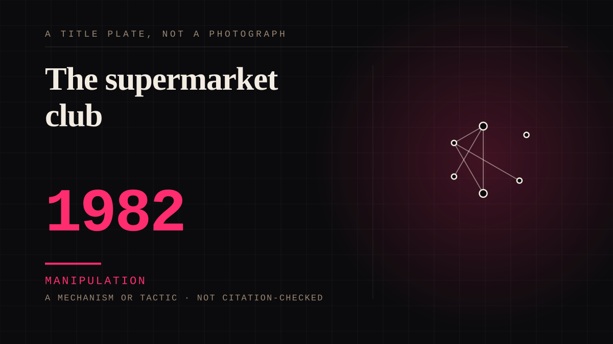

A mechanism or tactic · 1982 · Retail
The supermarket club
A discount card that identifies the household, tracks what it buys, and targets offers at what it has already bought.

The loyalty card joins the account to the person. Everything the field calls the attention economy was operational and profitable in supermarkets a decade before anybody named it.
Manipulation. One-sided attachment engineered for somebody else's benefit. Paid intimacy, parasocial persuasion, sasaeng, grief extraction, the streak. The lane that pays the bills and the lane that causes the most harm, frequently at the same time.
Same story, 4 other entries
Entitled to the adulation of all lesser mortals1940 → The fan club1950 → The stamp card1990 → The narrator is Tyler Durden, and he is not told1999
Where it sits
1950 1950-1999 · 1982 1999
Connected · 3 out, 8 in
It sits in